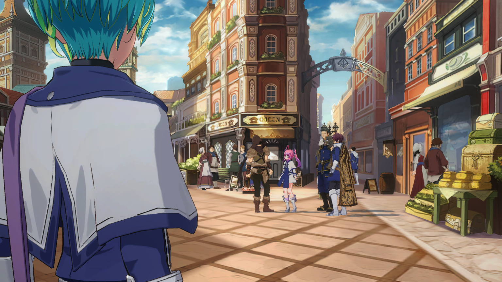

狙い通りか
まず最初に
わざと何度も負けてみせる
イゾルデをイカサマを見抜けないカモと思えば
バレバレの大勝負を仕掛けてくるだろうから──
そこで商人の不正をあばき、勝負から降ろす
コインの出目は関係ない
…賭けとしてはどうかと思うけど──
2023年6月イベント用
View script in lua| template1 | |
|  | |
| Load | |
| Play | |
|
【トリスタン】 狙い通りか |
|
【トリスタン】 まず最初に わざと何度も負けてみせる |
|
【トリスタン】 イゾルデをイカサマを見抜けないカモと思えば バレバレの大勝負を仕掛けてくるだろうから── |
|
【トリスタン】 そこで商人の不正をあばき、勝負から降ろす コインの出目は関係ない |
|
【トリスタン】 …賭けとしてはどうかと思うけど── |
| PreLoad | |
| PreLoad_AutoGenerate | |